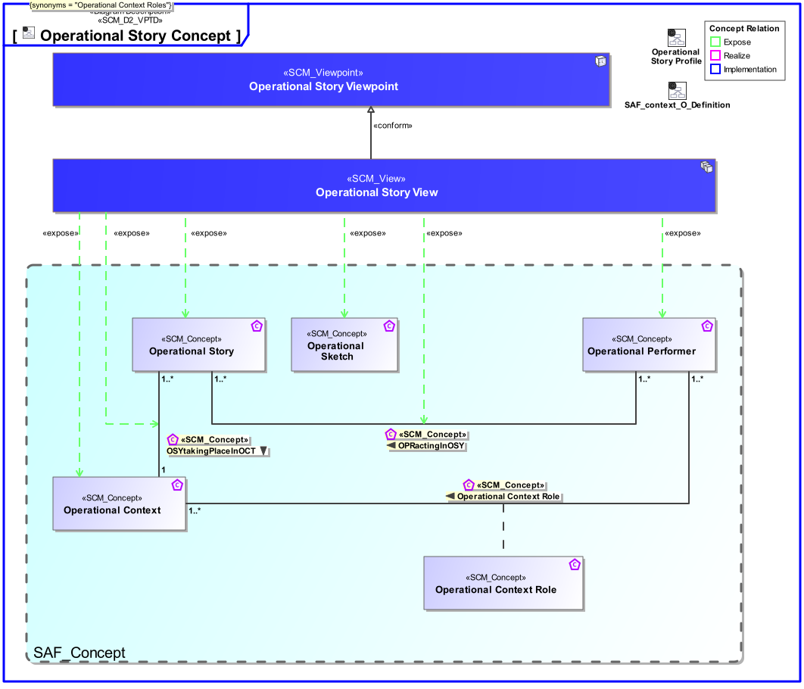
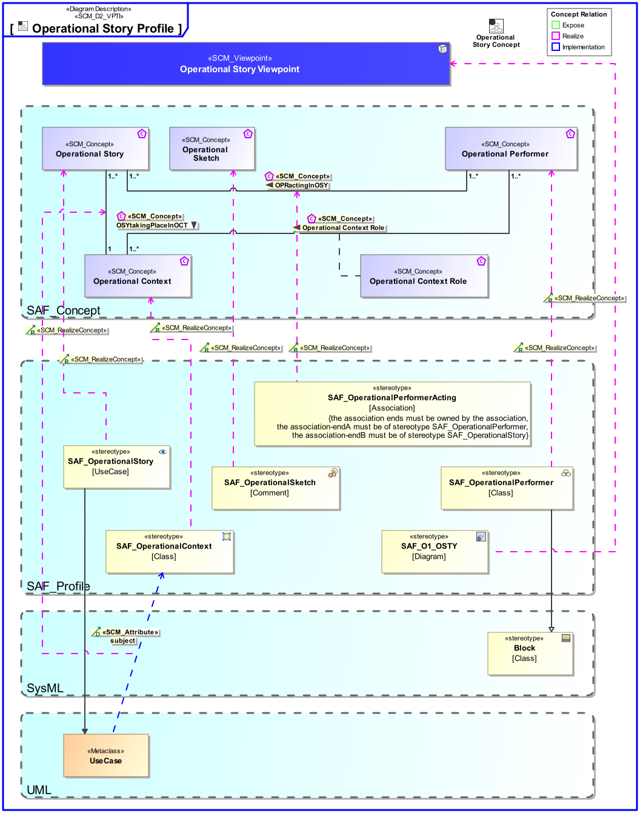

O1_OSTY Operational Story Viewpoint
| Domain | Aspect | Maturity |
|---|---|---|
| Operational | Context & Exchange |

The Operational Story Viewpoint
The Operational Story Viewpoint supports the “Business or Mission Analysis Process” activities of the INCOSE SYSTEMS ENGINEERING HANDBOOK 2023 [§2.3.5.1] and contributes to the problem or opportunity statement.
A use case diagram featuring model elements representing operational stories, the context in they’re taking place and operational performers involved. Note: Illustrations, drawings, sketches, etc., and/or descriptions in free text may provide a comprehensive understanding of the operational mission.
The following Stereotypes / Model Elements are used in the Viewpoint:
The Diagram shows the concepts exposed by the viewpoint, and related concepts if necessary.

| Concept | Documentation |
|---|---|
| Operational Context | An Operational Context is representing a separate Usage Scenario with a specific configuration of Operational Performers, these are interacting in the Scenario exhibiting a specific identified Operational Capability. One or more Operational Contexts meaningful for the Operational Domain are to be identified. Aliases: UAF::HighLevelOperationalConcept |
| Operational Performer | An Operational Performer is an element of the Operational Context that is capable to perform Operational Process Activities contributing to a specific identified Operational Capability. An Operational Performer may be any kind of organization, person, or even a system playing a role in one or more Operational Contexts. Aliases: UAF::OperationalPerformer |
| Operational Sketch | Specifies a free form sketch depicting a concept. |
| Operational Story | The Operational Story represents one or more Operational Use Cases in the Usage Scenario identified by the Operational Context. The Operational Story is described as narrative story-telling. |
| OPRactingInOSY | Specifies the fact that an Operational Performer acts in an Operational Story. |
| OSYtakingPlaceInOCT | Specifies the fact that an Operational Story occurs in a certain Operational Context. Note: When parts of an Operational Story do occur in several contexts, they shall be duplicated. |
The Diagram shows the implementation of exposed concepts.
